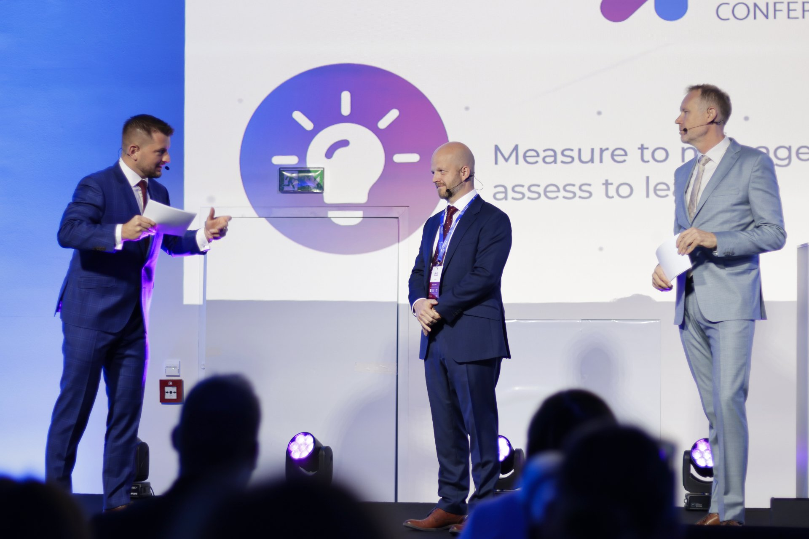
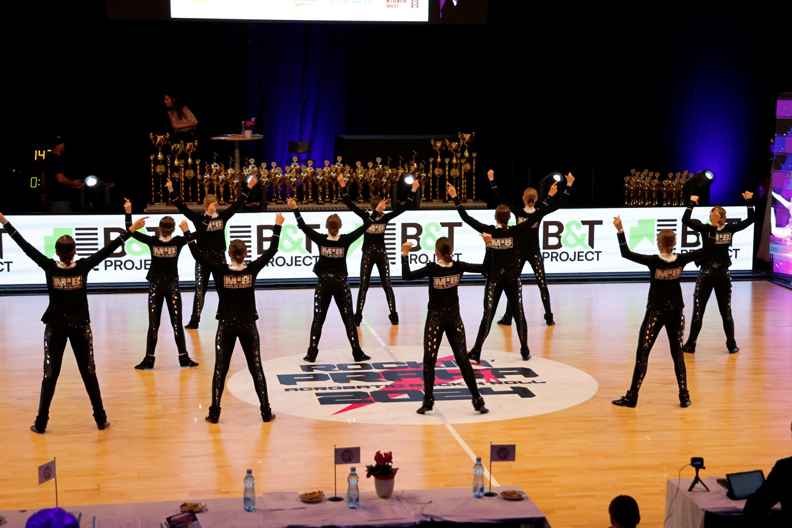
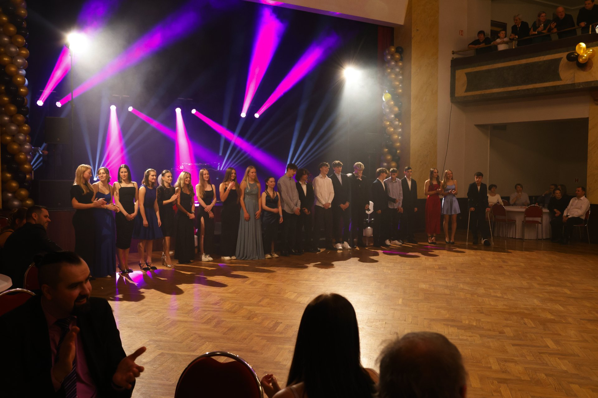
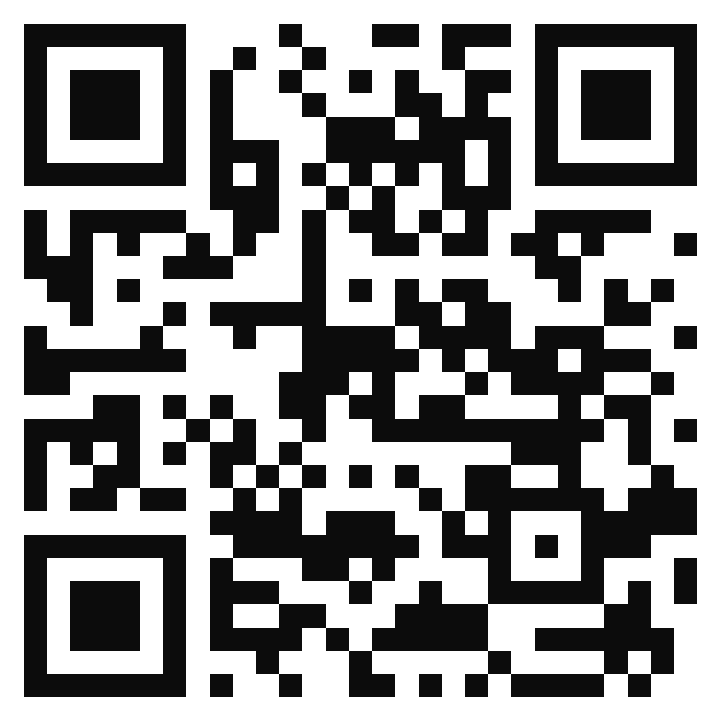
QR u prezence
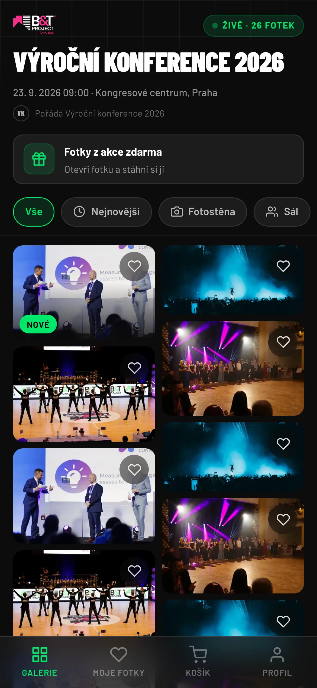
Kód je u prezence, na stolcích a na plátně mezi bloky. Kdo ho nenaskenuje, zadá na webu kód konference.
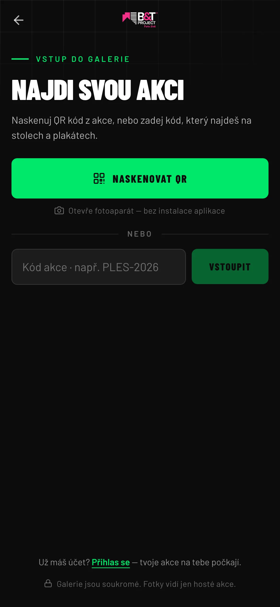
Fotograf fotí, fotky přibývají už během programu. Host nemusí nic obnovovat ani hlídat.
Otevře, stáhne, pošle dál. Bez účtu, bez čekání a kolikrát chce.
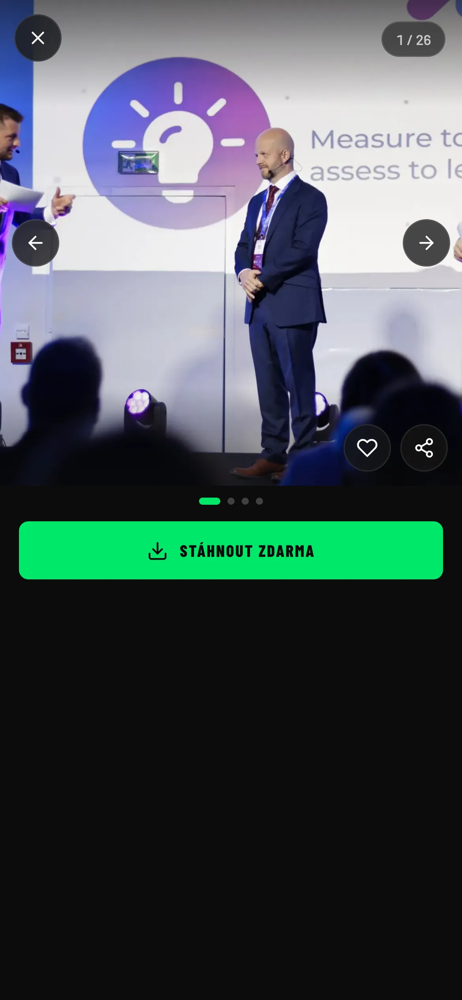
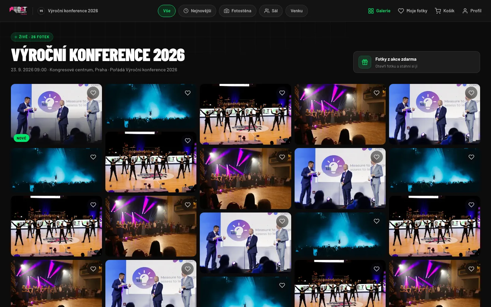
Pro konferenci navrhujeme režim otevřené akce: hostům se nic neprodává, fotky si stahují zdarma a kolikrát chtějí.
Příspěvek z panelu má dosah odpoledne, ne za týden. Aplikace k němu vede nejkratší cestou, která na telefonu opravdu funguje.
Tlačítko je rovnou pod fotkou. Bez účtu, bez čekání.
Druhé klepnutí a fotka je v knihovně telefonu.
Host napíše svůj komentář a fotku přiloží z knihovny — jako každou jinou.
Do WhatsAppu, Zpráv a Instagramu odchází fotka jako soubor přímo ze systémové nabídky telefonu. Tlačítko rovnou do LinkedInu záměrně nemáme: ověřovali jsme všechny cesty a LinkedIn na iPhonu obrázky ze systémové nabídky nepřijímá, jeho webové rozhraní zase umí příspěvek jen odeslat okamžitě, bez vlastního textu. Tlačítko, které tiše selže, by hostům udělalo horší službu než dvě klepnutí. Stejnou cestou jdou i světové fotoslužby.
Konference má víc sálů a celý den programu. Fotky se proto řadí od nejnovějších a dají se zúžit na stanoviště, kde host zrovna byl.
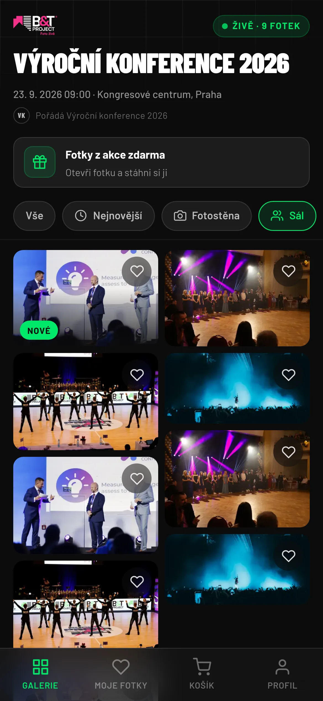
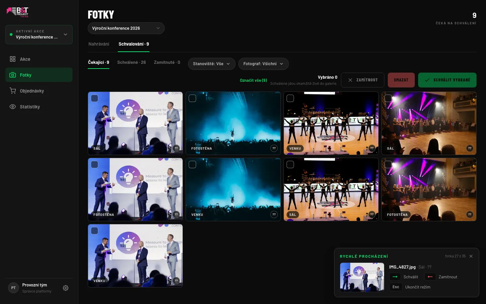
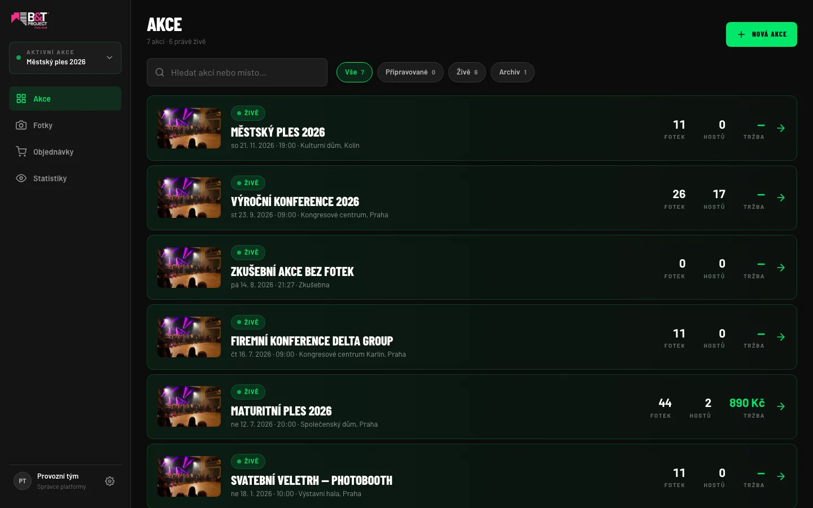
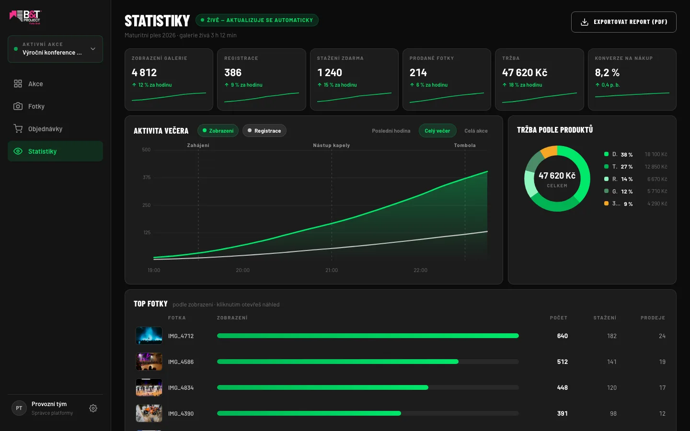
Zkušební galerie běží ve vašem telefonu — projdete si přesně to, co na konferenci uvidí host: od naskenování QR po uloženou fotku.
foto-zive.cz/najdi-akci
Ondřej Cedidla